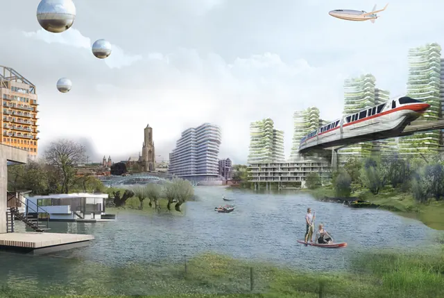

Nieuws ·
"Verlangen naar de Waterstad" – Een Toekomstgerichte Avond in Nijmegen

In een tijd waarin klimaatverandering de toekomst van onze steden vormgeeft, organiseert Nijmegen, bekend als Waalstad, een fascinerende avond onder de titel “Verlangen naar de Waterstad”. Deze bijeenkomst verkent hoe Nijmegen zich kan ontwikkelen als waterstad in de komende eeuw, en hoe architectuur, verbeelding en verhalen kunnen bijdragen aan deze nieuwe identiteit.
Deskundige sprekers zoals landschapsarchitect Mathieu Schouten, klimaatonderzoeker Wim Timmermans, architect Koen Olthuis en neerlandica en filosoof Lotte Jensen zullen hun inzichten delen over de toekomst van Nijmegen in relatie tot water en klimaatverandering. Zij zullen onderzoeken hoe stedenbouwkundig ontwerp, landschapsarchitectuur en culturele verhalen de toekomst van Nijmegen als waterstad kunnen vormgeven.
In het licht van de huidige watercrisis, gekenmerkt door vervuiling, stijgende waterspiegels en extreme weersomstandigheden, is de noodzaak voor steden als Nijmegen om klimaatbestendig en waterrobuust te worden steeds urgenter. Dit wordt benadrukt door de recente ‘Regionale Adaptatie Strategie’ (RAS) van de regio Rijk van Maas en Waal, met als doel de regio klimaatbestendig te maken tegen 2050.
Daarnaast zal de avond een blik werpen op de ‘Arnhem-Nijmegen 2120’ visie, ontwikkeld door Wageningen University & Research in opdracht van de Groene Metropoolregio Arnhem-Nijmegen (G
MR). Deze toekomstvisie, opgesteld door stedenbouwkundigen, landschapsarchitecten en andere experts, is gebaseerd op wetenschappelijke inzichten en is bedoeld om belangrijke gesprekken en beslissingen over de toekomst te stimuleren.
Waterstad Nijmegen
Architect Koen Olthuis zal in zijn presentatie tonen hoe architectuur kan reageren op stedelijke uitdagingen gerelateerd aan water en klimaatverandering. Met voorbeelden van over de hele wereld demonstreert hij hoe klimaatadaptief ontwerpen en flexibele strategieën kunnen leiden tot innovatieve waterarchitectuur.
Lotte Jensen, neerlandica en filosoof aan de Radboud Universiteit en auteur van “Wij en het water”, zal spreken over hoe water in de Nederlandse literatuur wordt verbeeld. Ze belicht hoe verhalen een cruciale rol kunnen spelen in het vormgeven van de toekomstvisie van de waterstad.
Na de presentaties zullen Wim Timmermans, Mathieu Schouten, Lotte Jensen en Koen Olthuis deelnemen aan een interactieve discussie met de gespreksleider en het publiek, om samen na te
denken over de toekomst van Nijmegen en de rol van water in ons stedelijk leven.
Deze avond is een unieke kans voor iedereen die geïnteresseerd is in stedenbouw, klimaatverandering, landschapsarchitectuur en de culturele verbeelding van onze relatie met water. We nodigen u van harte uit om deel te nemen aan dit inspirerende evenement en samen te verlangen naar een toekomst waarin Nijmegen zich ontplooit als een bloeiende waterstad.
Datum: 30 januari 2024
Tijd: 20:00 – 21:30 uur
Locatie: Thiemeloods, Nijmegen